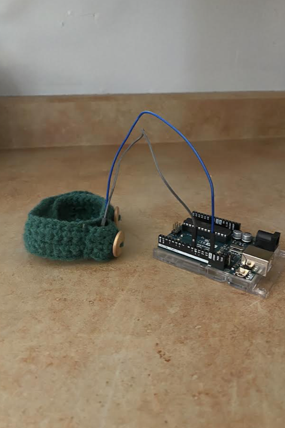

Somatic Design Project 2
An alarm bracelet that me and my team designed for the Maker Lab class.

Summary of the somatic design project
The project's goal was to create a product that engages with a user's somatic senses while also connecting to the Internet of Things (IoT). We decided to make an alarm bracelet that users can wear as an alarm, and also track their health through an app. The app is designed to connect to more than just the alarm bracelet, creating a network of products that track the user's health. This ecosystem is designed to keep the user healthy by monitoring things effortlessly.
Description of the design problem
The design problem is that some users cannot use a traditional alarm clock, or their phone as an alarm. This can be because of multiple reasons: It is too loud, distracting, or useless because all it does is ring in the morning. To tackle these issues, we decided that it should be a wearable product. It becomes more effective as an alarm since it vibrates as well, and it is accessible to users who have hearing disabilities. By making it a wearable product, it would be feasible to make it a health tracker as well based on already-existing health tracking bracelets. The accompanying app would have features that are already familiar to the user, such as recognizable logos and a clean, clutter-free layout that efficiently lets the user control theie alarm bracelet from the app.
Review of each step in the design process
We made a sketch of the prototype, showing how the bracelet would use a passive buzzer and the Arduino to power it. The process was smooth, and the prototype came together quickly. The alarm sound would engage with the user's auditory senses, and the theoretical vibrations would engage with the haptic senses.
Concluding evaluation of the final design
The final design resulted in a comfortable bracelet that is easy to wear. It functions as an alarm by making an alarm sound and theoretical vibrations. If we were to continue this project, I would add more customization features such as different materials or ways to fasten on the bracelet.
What did you accomplish through your involvement in the somatic design projects?
I learned how to design with accessibliity in mind, and understand the IoT further.
What challenges did you and your group encounter?
We didn't encounter any challenges.
Which aspects of the design process worked, and why?
The design entirely went smoothly, and the digital prototype came together particularly smoothly.
Which aspects of the design process did not work, and why?
Everything worked out fine.
What did you learn from your involvement in the design process?
I learnt how the IoT works further, and how to layout mobile interfaces.
How does the design process contribute to your evolution as a UX Designer?
The design process helped me further understand somatic design, and mobile interfaces. As a UX designer, I think the somatic experience should be kept in mind when designing.